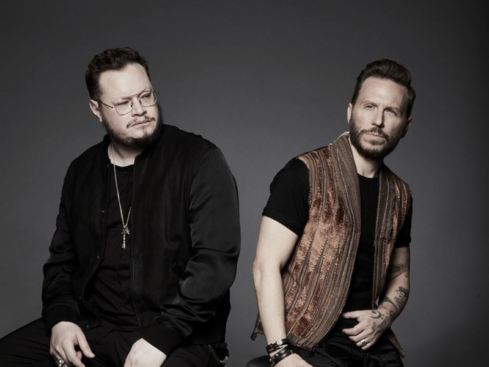

Sin Bandera es un dúo de balada romántica formado por el argentino Noel Schajris y el mexicano Leonal García en 2000 hasta su separación en 2009.
El 4 de noviembre de 2015, el dúo anunció su reencuentro en las redes sociales con una gira llamada Sin Bandera: Una última vez.
El nombre Sin Bandera, surgió un día en el cual Leonel y Noel iban en auto sobre una avenida principal de la Ciudad de México y en una plaza de dicho país llamada Campo Marte, donde se encuentra un mástil en el cual siempre luce, ese día, por alguna razón no estaba y decidieron llamar a su grupo como actualmente se llama.